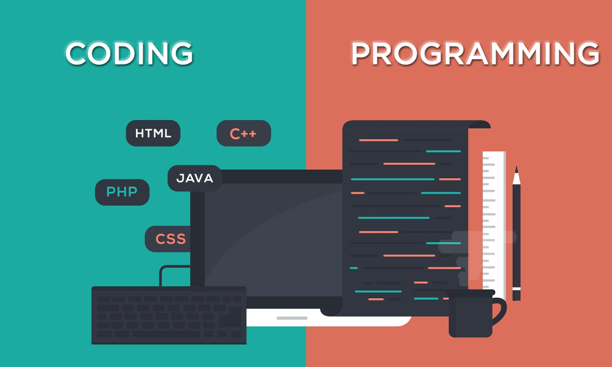

Beranda

Terlepas dari profesimu sekarang, kamu mungkin tidak asing dengan istilah coding. Apalagi jika kamu
berkecimpung dalam industri kerja yang berhubungan dengan teknologi. Banyak profesi IT yang
membutuhkan kemampuan coding seperti software engineer, web development, data scientist, dan
sebagainya. Dengan belajar menulis kode, kamu dapat memberitahu komputer apa yang harus dilakukan
atau bagaimana cara melakukan sesuatu dengan lebih cepat. Kamu dapat menggunakan kemampuan coding
ini untuk membuat situs web dan aplikasi, memproses data, dan melakukan banyak hal keren lainnya.
Tentang-Website
Codesure adalah Website coding untuk pemula yang ingin belajar dunia pemograman. Belajar
coding sekarang ini tidak hanya terbatas di perkuliahan. Sudah banyak kelas-kelas untuk belajar
coding secara online maupun tatap mata secara langsung. Tapi sebelum itu, kamu bisa memulai Belajar
Coding melalui Codesure dengan fasilitas yang lengkap dan bahasa pemograman yang sangat banyak untuk
di pelajari Seperti , Java , Python , SQL , PHP , Ruby , C , JavaScript. Ketika telah
menguasai beberapa bahasa pemograman tersebut anda akan mendapatkan manfaat yang besar Seperti :
Memulai karier di bidang IT , Membuat website atau aplikasi , Mengembangkan cara berpikir dan
skill problem solving.
Fitur Codesure
Apa saja fitur yang kamu dapat jika mengikuti Codesure sebagai pemula ? , Anda bisa mendapatkan
notifikasi Up to date ke masing masing class yang anda ikuti , dan Beberapa kelas yang ditawarkan
mencakup materi Android mobile programming, Game, Blockchain, Chatbot dan Cognitive / Cloud. yang
dimana ada fitur code review jadi peserta bisa paham konsep barisan kode yang nantinya kan di
jelaskan. feedback dari peserta lainnya , peserta lain bisa mengcommentarkan hasil projek yang
kalian buat dengan sudut pandang baru antara anda dengan peserta lainnya. Selain itu ada fitur point
plus jika peserta menyelesaikan tugas yang di berikan oleh Codesure , dengan point itu anda bisa
menukarkan dengan discount kelas pemograman.
Kontak & Sosial Media
Codesure Mempunyai juga mempunyai kontak dan sosial media , kegunaan dari kontak dan sosial media
adalah untuk peserta jika ada informasi seperti lomba yang di adakan oleh Codesure dan juga ada
problem atau kesulitan mengakses Website Codesure.
Wa (Admin) : xxxx-xxxx-xxxx
Instagram : @officalcodesure
Email : Codeesure@gmail.com